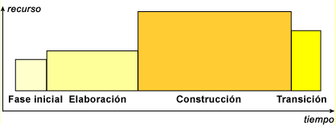
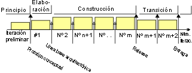
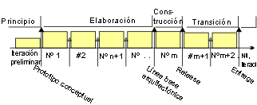
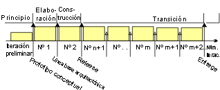
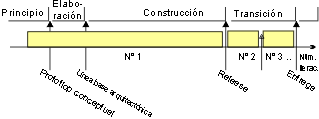

| Ciclo vital de RUP |
 |
|
| Contenido |
|---|
|
Fases y objetivos de un ciclo vital Desde la perspectiva de la gestión, el ciclo vital del software de Rational Unified Process (RUP) se descompone en cuatro fases secuenciales, cada una concluida por uno de los objetivos principales; cada fase es esencialmente un periodo de tiempo entre dos objetivos importantes. Al final de cada fase se lleva a cabo una valoración para determinar si los objetivos de la fase se han alcanzado. Una valoración satisfactoria permite que el proyecto continúe a la fase siguiente. Planificar las fasesTodas las fases no son idénticas en términos de planificación y esfuerzo. Aunque esto varía considerablemente dependiendo del proyecto, un ciclo inicial de desarrollo típico para un proyecto de tamaño medio debe anticipar la distribución siguiente entre el esfuerzo y la planificación:
que puede ilustrarse como  Esta distribución puede variar. Por ejemplo, las herramientas que generan código y los guiones de prueba pueden reducir la fase de construcción. Asimismo, para un ciclo de evolución, las fases iniciales y de elaboración son considerablemente menores, porque ya se ha establecido una visión básica y una arquitectura. Planificar las estrategiasEn esta sección, se introducen diversos patrones de ciclo vital que corresponden a perfiles de proyecto comunes. Patrón de ciclo vital: incremental"La estrategia incremental determina las necesidades del usuario y define los requisitos del sistema y, a continuación, realiza el resto del desarrollo en una secuencia de compilaciones. La primera compilación incorpora partes de las funciones planificadas, la siguiente compilación añade más funciones y así sucesivamente hasta que se completa el sistema." [DOD94] Las iteraciones siguientes son características:
 Esta estrategia es adecuada cuando:
Patrón de ciclo vital: evolutivo"La estrategia evolutiva difiere de la incremental en el reconocimiento de que las necesidades del usuario no se comprenden por completo y que no pueden definirse todos los requisitos de entrada, sino que se van redefiniendo en cada compilación sucesiva." [DOD94] Las iteraciones siguientes son características:
 Esta estrategia es adecuada cuando:
Patrón de ciclo vital: entrega incrementalAlgunos autores también establecen fases en las entregas de funcionalidades incrementales al cliente [GIL88]. Esto puede ser necesario en casos de fuertes presiones con los plazos de comercialización, en los que la entrega temprana de ciertas funciones clave puede suponer beneficios comerciales significativos. En términos del enfoque de iteración y fase, la fase de transición empieza al principio y es la que más iteraciones tiene. Esta estrategia precisa de una arquitectura muy estable, que es difícil de adquirir en un ciclo de desarrollo inicial, para un sistema "sin precedentes". Las iteraciones siguientes son características:
 Esta estrategia es adecuada cuando:
Patrón de ciclo vital: "Diseño grande"El enfoque de cascada tradicional puede verse como un caso degenerado en el que sólo hay una iteración en la fase de construcción. Se denomina "diseño grande" en [DOD94]. En la práctica, es difícil evitar las iteraciones adicionales en la fase de transición. Las iteraciones siguientes son características:
 Esta estrategia es adecuada cuando:
Patrón de ciclo vital: estrategias híbridasEn la práctica, son pocos los proyectos que siguen una única estrategia. A menudo, se emplea una forma híbrida, un poco de evolución al principio, un poco de compilaciones incrementales y varias entregas. Entre las ventajas del modelo de iteración de fases está que le permite adecuar un enfoque híbrido, simplemente aumentando la longitud y el número de iteraciones en fases concretas:
|
© Copyright IBM Corp. 1987, 2006. Reservados todos los derechos. |